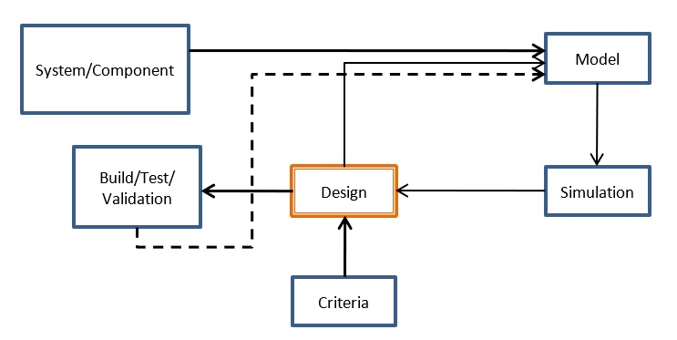

https://pressbooks.bccampus.ca/engineeringsystems/chapter/introduction/

Modern Design Process
Mechatronics by Bond Graphs
Bond Graph Modelling of Engineering Systems
Introduction to Physical Systems Modelling with Bond Graphs
Modeling and Simulation of Dynamic Systems using Bond Graphs
Aspects of Bond Graph Modeling in Control
Modeling and Simulation of Physical Systems in a Mechatronic Context
Energy-based advection modelling using bond graphs
https://github.com/mdecycu/BondGraphTools
Computer-aided modelling of complex physical systems with BondGraphTools
https://github.com/gawthrop/BondGraphTools-Biomolecular
Analysing and simulating energy-based models in biology using BondGraphTools
A semantics, energy-based approach to automate biomodel composition
https://bondgraphtools.readthedocs.io/en/latest
AUTOMATED MODELING AND SIMULATION USING THE BOND GRAPH METHOD FOR THE AEROSPACE INDUSTRY
GPBG: A Framework for Evolutionary Synthesis of Multi-domain Engineering Systems
Automated Design Approaches for Multi-Domain Dynamic Systems Using Bond Graphs and Genetic Programming
Toward an Automated Design Method for Multi-Domain Dynamic Systems Using Bond Graphs and Genetic Programming
System-Level Synthesis of MEMS via Genetic Programming and Bond Graphs
https://www.cse.sc.edu/~jianjunh/publication.htm
https://www.bondsimulation.com/
Syllabus:
1 系統模型簡介 (Introduction to Models of Systems)
1.1 系統、子系統與元件 (Systems, Subsystems, and Components)
1.2 狀態取決系統 (State-Determined Systems)
1.3 動態模型用途 (Uses of Dynamic Models)
1.4 線性與非線性系統 (Linear and Nonlinear Systems)
1.5 自動模擬 (Automated Simulation)
2 系統模型 (System Models)
2.1 電機系統 (Electrical Systems)
2.1.1 電路 (Electrical Circuits)
2.1.2 電網路 (Electrical Networks)
2.2 機械系統 (Mechanical Systems)
2.2.1 平移力學 (Mechanics of Translation)
2.2.2 固定軸旋轉 (Fixed-Axis Rotation)
2.2.3 平面運動 (Plane Motion)
3 狀態方程式與自動模擬 (State-Space Equations and Automated Simulation)
3.1 系統方程標準式 (Standard Form for System Equations)
3.2 輸出變數推導 (Output Variable Formulation)
3.3 非線性與自動模擬 (Nonlinear and Automated Simulation)
4 線性系統分析與控制 (Analysis and Control of Linear Systems)
4.1 微分方程式解題 (Solution Techniques for ODE)
4.2 自由響應與特徵值 (Free Response and Eigenvalues)
4.3 單階系統範例 (First-Order Examples)
4.4 二階系統範例 (Second-Order Examples)
5 傳感器、放大器與相關儀器 (Transducers, Amplifiers, and Instruments)
5.1 功率傳感器 (Power Transducers)
5.2 儲能傳感器 (Energy-Storing Transducers)5.3 放大器與儀器 (Amplifiers and Instruments)
6 課程總結 (Course Summary)
Copyright © All rights reserved | This template is made with by Colorlib